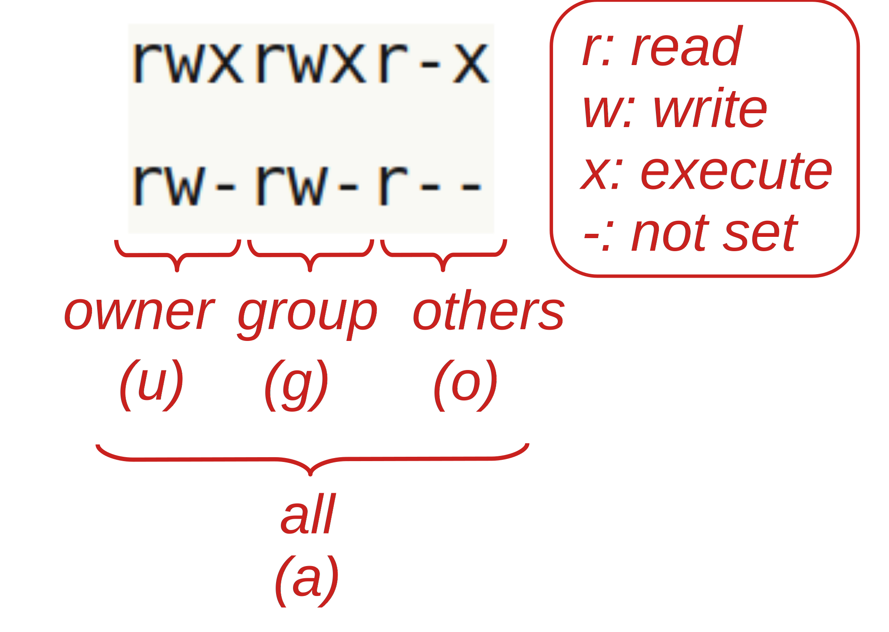

Data management at OSC and beyond
Week 7 - part II
Viewing and modifying file permissions
File “permissions” are the types of things (e.g. reading, writing) that different groups of users (creator, group, anyone else) are permitted to do with files and dirs.
There are a couple of reasons you may occasionally need to view and modify file permissions:
- You may want to make your data read-only
- You may need to share files with other users at OSC
Viewing file permissions
To show file permissions, use ls with the -l (long format) option that we’ve seen before. The command below also uses the -a option to show all files, including hidden ones (and -h to show file sizes in human-readable format):

Here is an overview of the file permission notation in ls -l output:

In the two lines above:
rwxrwxr-xmeans:
read + write + execute permissions for both the owner (firstrwx) and the group (secondrwx), and read + execute but not write permissions for others (r-xat the end).rw-rw-r--means:
read + write but not execute permissions for both the owner (firstrw-) and the group (secondrw-), and only read permissions for others (r--at the end).
Let’s create a file to play around with file permissions:
# Create a test file
touch testfile.txt
# Check the default permissions
ls -l testfile.txt-rw-rw----+ 1 jelmer PAS2700 0 Mar 7 13:36 testfile.txtChanging file permissions
This can be done in two different ways with the chmod command. Here, we’ll focus on the method with = (set permission to), + (add permission), and - (remove permission).
For example, to add read (r) permissions for all (a):
# chmod <who>+<permission-to-add>:
chmod a+r testfile.txt
ls -l testfile.txt-rw-rw-r--+ 1 jelmer PAS0471 0 Mar 7 13:40 testfile.txtTo set read + write + execute (rwx) permissions for all (a):
# chmod <who>=<permission-to-set>`:
chmod a=rwx testfile.txt
ls -l testfile.txt-rwxrwxrwx+ 1 jelmer PAS2700 0 Mar 7 13:36 testfile.txtTo remove write (w) permissions for others (o):
# chmod <who>-<permission-to-remove>:
chmod o-w testfile.txt
ls -l testfile.txt-rwxrwxr-x+ 1 jelmer PAS2700 0 Mar 7 13:36 testfile.txtYou can also use a series of 3 numbers (for user, group, and others) to set permissions, where each number can take on the following values:
| Nr | Permission | Nr | Permission |
|---|---|---|---|
| 1 | x | 5 | r + x |
| 2 | w | 6 | r + w |
| 4 | r | 7 | r + w + x |
For example, to set read + write + execute permissions for all:
chmod 777 testfile.txtTo set read + write + execute permissions for yourself, and only read permission for the group and others:
chmod 744 file.txtMaking your data read-only
So, if you want to make your raw data (here: the files in the data/fastq dir) read-only, you can use:
Set only read permissions for everyone:
chmod a=r data/fastq/*Take away write permissions for yourself (no-one else should have it by default):
chmod u-w data/fastq/*
One tricky and confusing aspect of file permissions is that to list a directory’s content, you need execute permissions for the dir! This is something to take into account when you want to grant others access to your project e.g. at OSC.
To set execute permissions for everyone but only for dirs throughout a dir hierarchy, use an X (uppercase x):
chmod -R a+X my-dirAfter running one or both of the above commands, let’s check the permissions:
ls -l data/fastqtotal 0
-r--r--r--+ 1 jelmer PAS0471 0 Mar 7 13:41 sample001_R1.fastq
-r--r--r--+ 1 jelmer PAS0471 0 Mar 7 13:41 sample001_R2.fastq
-r--r--r--+ 1 jelmer PAS0471 0 Mar 7 13:41 sample002_R1.fastq
-r--r--r--+ 1 jelmer PAS0471 0 Mar 7 13:41 sample002_R2.fastq
# [...output truncated...]What happens when we try to remove write-protected files?
rm data/fastq/*fastqrm: remove write-protected regular empty file ‘data/fastq/sample001_R1.fastq’?You’ll be prompted for every file! If you answer y (yes), you can still remove them. (But note that people other than the file’s owners cannot overried file permissions; only if they are system administrators.)
Using files across projects: Using symbolic links
Single files
A symbolic (or soft) links only links to the path of the original file, whereas a hard link directly links to the contents of the original file. Note that modifying a file via either a hard or soft link will modify the original file.
Create a symlink to a file using ln -s <source-file> [<link-name>]:
# Only provide source => create link of the same name in the wd:
ln -s /fs/ess/PAS2700/share/garrigos/data/fastq/ERR10802863_R1.fastq.gz
# The link can also be given an arbitrary name/path:
ln -s /fs/ess/PAS2700/share/garrigos/data/fastq/ERR10802863_R1.fastq.gz shared-fastq.fastq.gzAt least at OSC, you have to use an absolute path for the source file(s), or the link will not work. The $PWD environment variable, which contains your current working directory can come in handy to do so:
# (Fictional example, don't run this)
ln -s $PWD/shared-scripts/align.sh project1/scripts/Multiple files
Link to multiple files in a directory at once:
# (Fictional example, don't run this)
ln -s $PWD/shared_scripts/* project1/scripts/ Link to a directory:
# (Fictional example, don't run this)
ln -s $PWD/shared_scripts/ project1/scripts/
ln -s $PWD/shared_scripts/ project1/scripts/ln-shared-scriptsBe careful when linking to directories: you are creating a point of entry to the original dir. Therefore, even if you enter via the symlink, you are interacting with the original files.
This means that a command like the following would remove the original directory!
rm -r symlink-to-dirInstead, use rm symlink-to-dir (the link itself is a file, not a dir, so you don’t need -r!) or unlink symlink-to-dir to only remove the link.
Exercise: Creating symbolic links
Create a symbolic link in your
$HOMEdir that points to your personal dir in the project dir (/fs/ess/PAS2700/users/$USER).If you don’t provide a name for the link, it will be your username (why?), which is not particularly informative about its destination. Therefore, give it a name that makes sense to you, like
PLNTPTH6193-SP24orpracs-sp24.
Click for the solution
ln -s /fs/ess/PAS1855/users/$USER ~/PLNTPTH6193-SP24- What would happen if you do
rm -rf ~/PLNTPTH8300-SP21? Don’t try this.
Click for the solution
The content of the original dir will be removed.